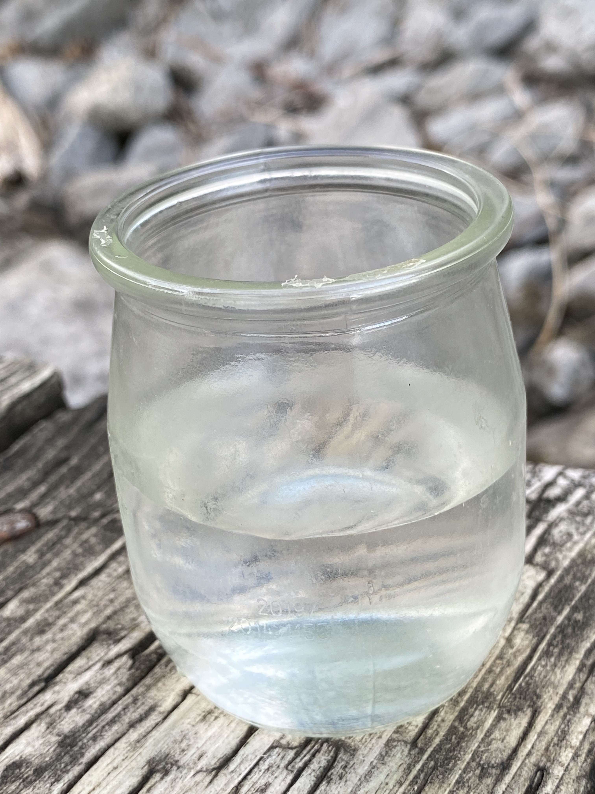
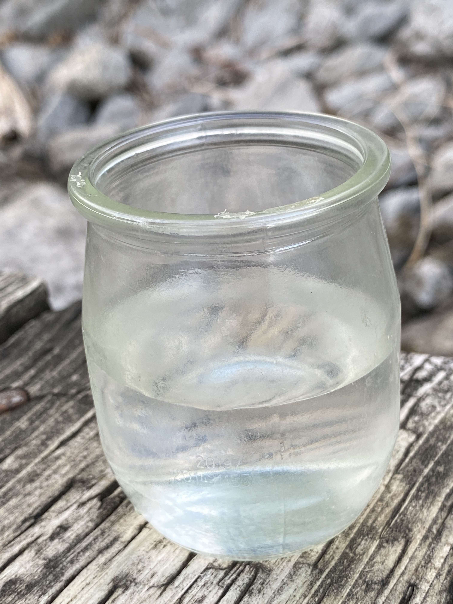

The contents of small glass jars represent substances we wash away, hide, let decay, try to get rid of, or forget about in the intimacies of our home. A collection of conduits of care transmitted and received as represented by those most in touch with us around South Etobicoke. Be it the cleaner’s supplies keeping hotel rooms sanitized, water puddles on the bathroom floor after a redeeming shower, the factory worker’s hands washing away oily residue, a parent’s night sweats of worry, the wet sponge you squeezed hard because it was too much, grease from a kitchen, melted gelato but once enjoyed after a long shift, a teenager’s tears from friendships lost and found, or dried toothpaste from the day, you exhausted, wondered if it all mattered anymore.
back to home
Vasuki Shanmuganathan is a researcher, educator, and artist. She draws from her experiences in the arts, health, refugee advocacy, and youth collectives in the UK and Canada. She holds a PhD from the University of Toronto. In 2016, she started the Tamil Archive Project (TAP) collective, which combines art, knowledge translation, and archival practices into accessible events that centre care. She previously worked as Assistant Director of Mayworks Festival of Working People & the Arts and served as Chair of Whippersnapper Gallery. Her art practice engages with the archival and symbiotic forms of engagements such as communal care. Instagram: @manikudu